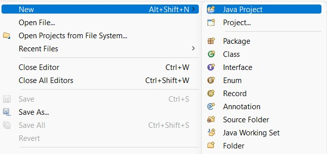
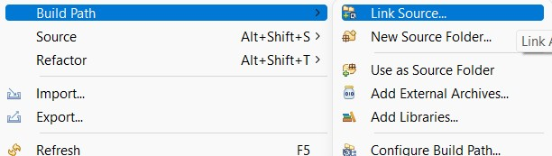
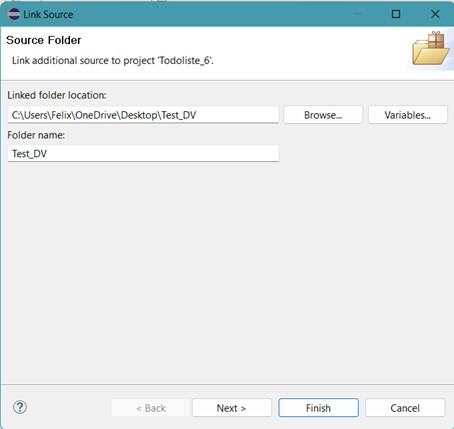
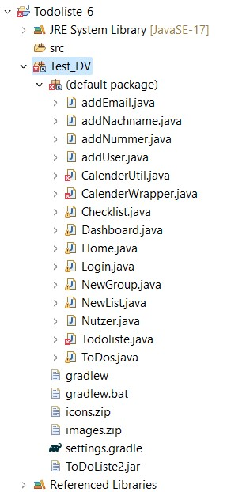
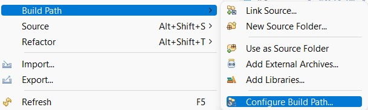
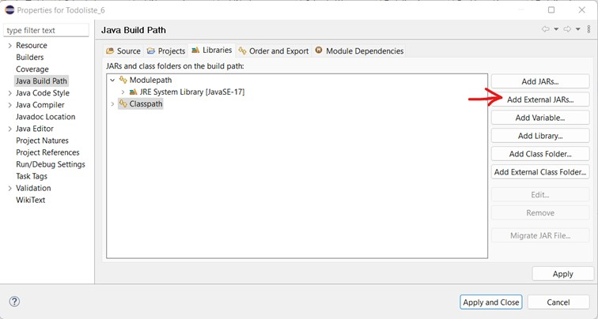
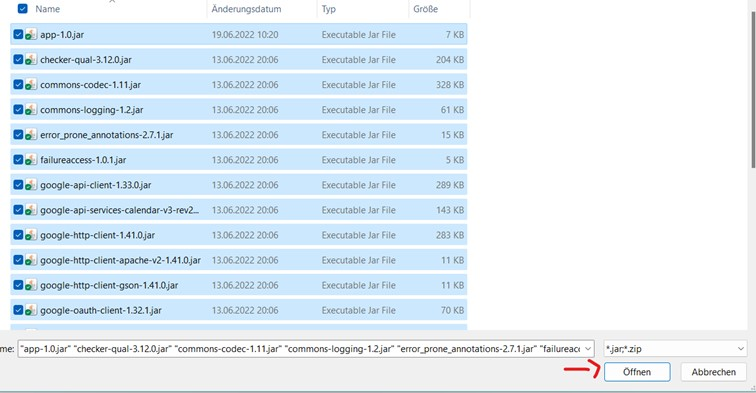
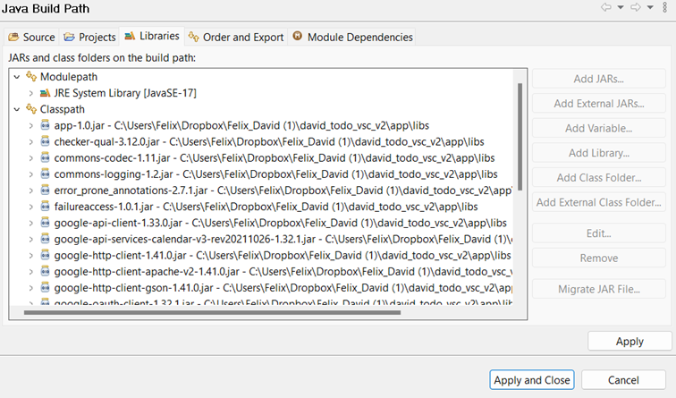

Benutzerhandbuch
Projekt: ToDoListe
Semester: SS 2022
Teammitglieder:
- Nico Meyhof (nico.meyhof@hs-furtwangen.de)
- Felix Fischer (felix.fischer@hs-furtwangen.de)
- David Lorenz (david.lorenz@hs-furtwangen.de)
Maximilian Kienzle (maximilian.kienzle@hs-furtwangen.de)
Einleitung
Die folgende Anwendung soll dazu dienen, Ihr Leben zu vereinfachen. Einfach und schnell, neue Termine und ToDo‘s festzulegen und diese in einer Übersicht zu speichern. Dazu wurde unsere Anwendung mit dem GoogleKalender verknüpft, damit Sie jederzeit ihre hinzugefügten Termine auf Ihrem Smartphone abrufbereit haben. Auch Gruppen stellen ab sofort kein Hindernis mehr da, egal ob für Festivals, Urlaube oder andere Gruppenveranstaltungen, erstellen Sie ganz einfach Ihre Gruppen ToDo’s.
Eine Voraussetzung für die Anwendung ist die Installation von Eclipse.
Anwendung richtig Starten
Die Zip Datei ToDoListe aus GitHub herunterladen und auf dem Computer speichern und entpacken.
Diese liegt unter 2_Quellcode/Todoliste.zip
Nun muss man in Eclipse ein neues Java Projekt erstellen.

Wenn sie dies getan haben gehen sie auf das Java Projekt. Nun rechte Maustaste auf das Java Projekt klicken und Build Path anwählen. Danach Link Source

Wenn Sie auf Link Source ausgewählt haben öffnet sich ein weiters Fenster. In diesem Fenster drücken Sie auf Browse und wählen die Zip Datei die sie vorher aus GitHub Heruntergeladen haben.

Wenn sie diesen Order ausgewählt haben drücken Sie auf Finish

Nun sollte es bei Ihnen so aussehen.
Nun drücken Sie die rechte Maustaste auf das Java Projekt. Gehen auf Build Path und wählen Configure Build Path aus

Drücken Sie nun auf Libraries dann auf Classpath und dann auf Add External JARs.

Nun wählen sie den Ordner „2_Quellcode/GUI/libs“ aus.
Dort angekommen wählen Sie alle „.jar“ aus und klicken auf öffnen.

Nun müsse Sie noch auf Apply and close drücken und die Anwendung ist Start bereit

SignUp
Beim Starten der Anwendung wird der Home-Bildschirm geöffnet.
Durch das rote Kreuz, rechts oben im Eck, kann dieser auch wieder geschlossen werden.
Taucht das SignUp-Menü inmitten des Bildschirms auf, lässt es sich durch Drag and Drop auf das Bild über den Bildschirm ziehen.

Hier wird nun das SignUp-Menü gezeigt, in dem die Daten
· Vorname
· Nachname
· Matrikelnummer
Eingetragen werden müssen.
Durch betätigen des lila farbenen SignUp-Buttons, wird die Registrierung bestätigt und man wird weitergeleitet zu dem Login-Screen.
Falls die Registrierung bereits abgeschlossen wurde, wird durch betätigen des grauen Login-Buttons, ebenfalls zu dem Login Screen weitergeleitet.
Mögliche Fehlermeldung:
Bei falscher Eingabe der Matrikelnummer und der E-Mail, wird folgende Fehlermeldung ausgegeben:
„Matrikelnummer muss aus Zahlen besten und E-Mail muss mindestens @ enthalten!“

Durch betätigen des Resign-Buttons wird das SignUp-Menü wieder geöffnet
Login
Der Login-Screen.
Durch klicken auf das rote Kreuz kann dieser wieder geschlossen werden.

Hier wird nun
· Die E-Mail als Benutzername
und
· Die Matrikelnummer als Passwort
abgefragt.
Durch bestätigen des Login-Button, öffnet sich das Dashboard.
Mögliche Fehlermeldung:
Bei falscher Eingabe des Passworts und der E-Mail, erscheint folgende Fehlermeldung:
Hierbei ist zu beachten, dass die E-Mail mindestens ein „@“ enthält und die Matrikelnummer eine reine Zahlenkette ist.
„Login fehlgeschlagen, bitte erneut versuchen“

Durch betätigen des „Retry“-Buttons öffnet sich das Login-Menü wieder.
Dashboard
Das Dashboard öffnet sich wie folgt:

Es kann jederzeit durch das rote Kreuz geschlossen werden, oder auch durch betätigen des Logout-Buttons auf denn Login-Screen zurückgewichen werden.
Durch klicken auf das obere Icon öffnet sich das Pop-Out-Menü:

Hier steht nun folgendes zur Auswahl:
· Neue Liste erstellen

· Neue Gruppe erstellen

Durch Eingabe eines Namens in dem New List-Fenster und Bestätigung durch klicken auf den lila farbenen Create-Button, öffnet sich deine Eigens erstellte Liste, in welcher nun verschiedene ToDo’s eingetragen werden können. Dabei ist zu beachten, dass sobald diese Liste geschlossen wird, die Daten aus der Liste gelöscht werden, jedoch weiterhin im Kalender bestehen.
Durch klicken auf den Kalender-Button, wird man direkt zum Google-Kalender geleitet.
ToDo’s erstellen

Durch Eingabe einer Nachricht, welche nachher den Titel des ToDo’s vorgibt und einem Datum (dd.mm.yyyy) in dem Textfeld, wird durch bestätigen des Add-Buttons ein Termin auf der Liste erstellt.

Im CommandWindow von Eclipse, wird ein Link ausgegeben, welcher zu dem Google Kalender führt.

Durch kopieren des Links und öffnen im WebBrowser, gelangt man zum Google Kalender in dem das ToDo vermerkt wurde.
Wichtig!!!
Bei erstmaliger Verwendung des Links wird der Google Kalender nicht direkt geöffnet da er noch mit keiner GoogleMail verknüpft ist. Diese wird bei öffnen des Links von Google selber abgefragt. Erst danach wird auch das ToDo zum Kalender hinzugefügt.